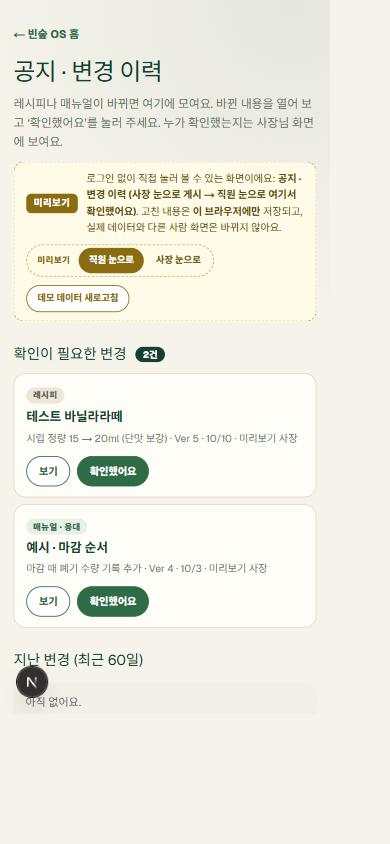
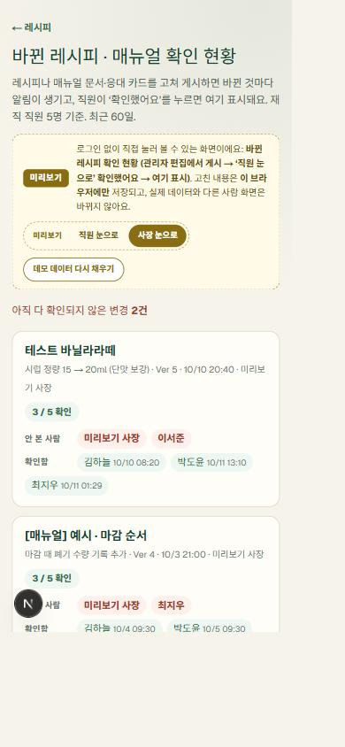
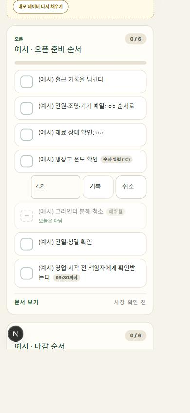
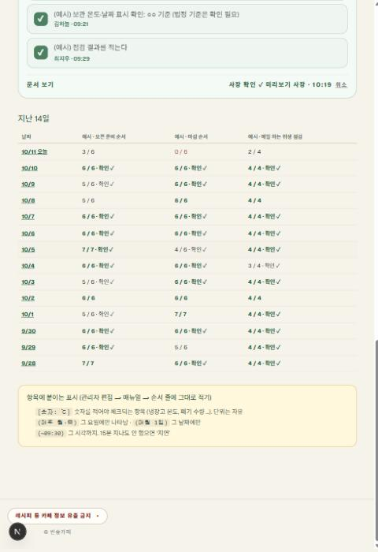
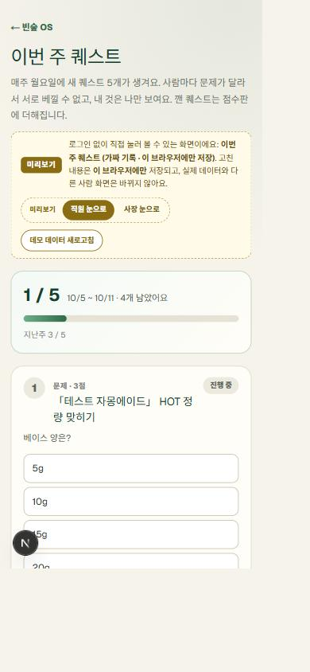
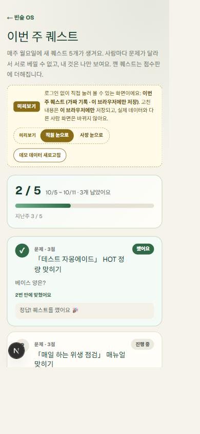

묻지 않아도 알고,
실행하고, 기록하는 매장.
카페 직원 교육용 매뉴얼북 포털 — 레시피 · 운영 매뉴얼 · 응대북 · 오늘 체크 · 교육 · 시험 · 퀘스트 · 칭찬 · 인수인계 · 챗봇
"외부 유출이 완전 싫거든" — 이 한마디가 로그인·워터마크·열람 기록·자동 로그아웃이 됐습니다.
https://beansoop-recipe-os.vercel.app
시연판은 가짜 예시 데이터 · 로그인 없음 · 데이터 창고 연결 없음. "직원 눈으로 / 사장 눈으로"로 바꿔 봅니다.
점수는 재미와 격려용. 급여·승급은 시험·인증에서 사장이 따로 정합니다.






직접 잰 값 아직 없음 레시피 질문 횟수·오픈마감 확인 시간은 실제 데이터를 넣은 뒤 잽니다. (사장님 한 줄 — 전에는 하루 몇 번 물어봤는지, 느낌이라도)
묻지 않아도 알고,
실행하고, 기록하는 매장.
빈숲카페 · 양진서 · 감사합니다